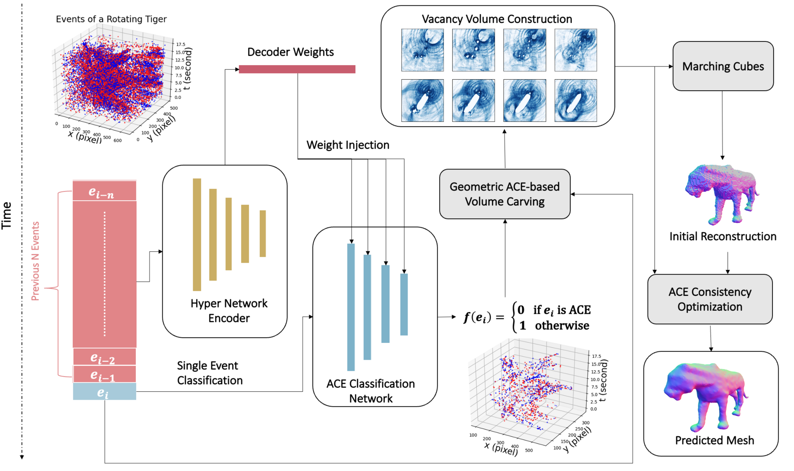
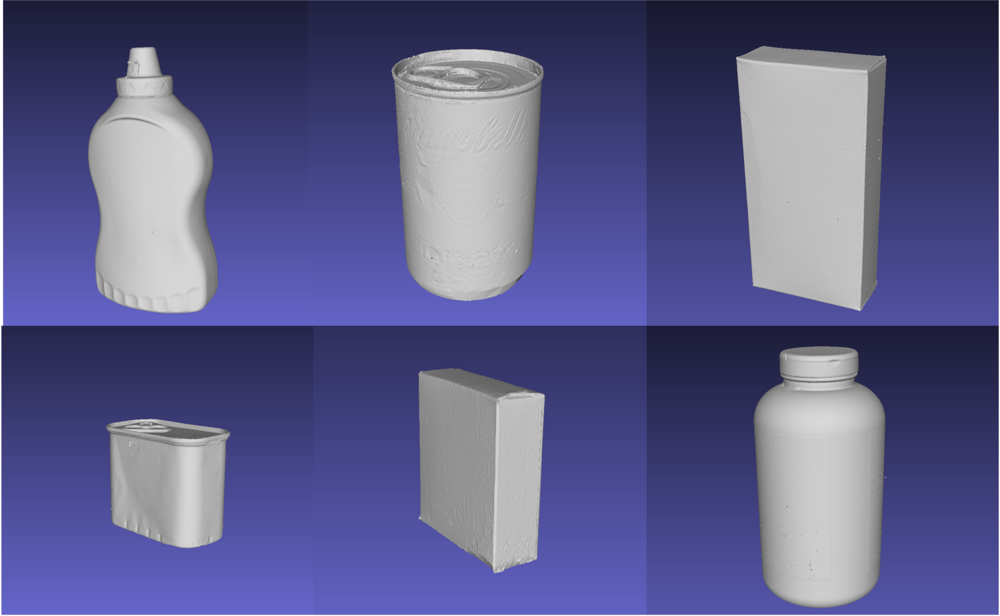

EvAC3D: From Event-based Apparent Contours to 3D Models via Continuous Visual Hulls
- Ziyun Wang*¹
- Kenneth Chaney*¹
- Kostas Daniilidis¹
TL;DR: We reconstruct high-fidelity 3D meshes from events alone, by learning Apparent Contour Events and carving a continuous visual hull that can be refined one event at a time.
Abstract
3D reconstruction from multiple views is a successful computer vision field with multiple deployments in applications. State of the art is based on traditional RGB frames that enable optimization of photo-consistency cross views. In this paper, we study the problem of 3D reconstruction from event-cameras, motivated by the advantages of event-based cameras in terms of low power and latency as well as by the biological evidence that eyes in nature capture the same data and still perceive well 3D shape.
The foundation of our hypothesis that 3D reconstruction is feasible using events lies in the information contained in the occluding contours and in the continuous scene acquisition with events. We propose Apparent Contour Events (ACE), a novel event-based representation that defines the geometry of the apparent contour of an object. We represent ACE by a spatially and temporally continuous implicit function defined in the event x-y-t space. Furthermore, we design a novel continuous Voxel Carving algorithm enabled by the high temporal resolution of the Apparent Contour Events.
To evaluate the performance of the method, we collect MOEC-3D, a 3D event dataset of a set of common real-world objects. We demonstrate the ability of EvAC3D to reconstruct high-fidelity mesh surfaces from real event sequences while allowing the refinement of the 3D reconstruction for each individual event.
Method overview
A hypernetwork encodes the previous events into the weights of a per-event classifier, which labels each incoming event as an Apparent Contour Event or not. The predicted ACEs drive geometric volume carving, and the resulting vacancy volume is converted to a mesh with marching cubes and then refined by ACE consistency optimization.

Apparent Contour Events (ACE)
The main challenge in reconstructing objects from events is finding the appropriate geometric quantities that can be used for surface reconstruction. In frame-based reconstruction algorithms, silhouettes are used to encode the rays from the camera center to the object. However, computing silhouettes requires integrating frame-based representations, which limits the temporal resolution of the reconstruction updates. Additionally, since events represent the change in log of light intensity, events are only observed where the image gradients are nonzero, so one would not observe enough events on a smooth object surface. These two facts combined make traditional silhouettes non-ideal for events. To address these two shortcomings, we introduce Apparent Contour Events (ACE), a novel representation that encodes the object geometry while preserving the high temporal resolution of the events.
Event-based visual hull
Continuous volume carving provides smooth, continuous incremental changes to the carving volume. This is accomplished by only carving updates through the use of ACEs. ACEs are defined by the tangent rays to the surface at any given positional location. The time resolution of event-based cameras provides ACEs from continuous viewpoints along the trajectory of the camera.
MOEC-3D dataset
We collect the Multi Object Event Camera dataset in 3D (MOEC-3D), a 3D event dataset of real objects. For ground truth models, an industrial-level Artec Spider scanner is used to provide highly accurate 3D models. The detailed steps of data collection can be found in the Supplementary Material. Here are some examples of the scanned objects:

Acknowledgements
We gratefully acknowledge the support of the GRASP
Laboratory at the University of Pennsylvania.
BibTeX
@inproceedings{wang2022evac3d,
title={{EvAC3D: From Event-based Apparent Contours to 3D Models via Continuous Visual Hulls}},
author={Wang, Ziyun and Chaney, Kenneth and Daniilidis, Kostas},
booktitle={European Conference on Computer Vision (ECCV)},
year={2022}
}